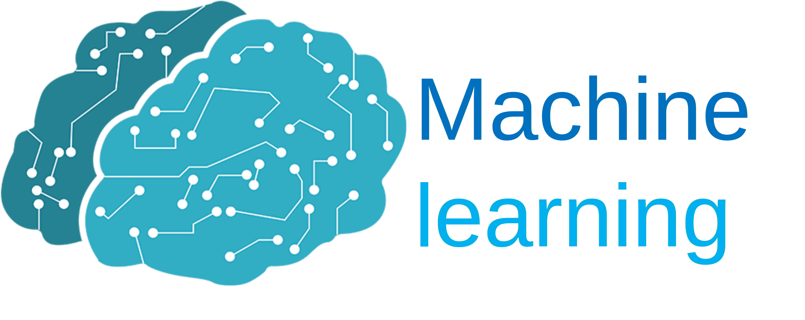
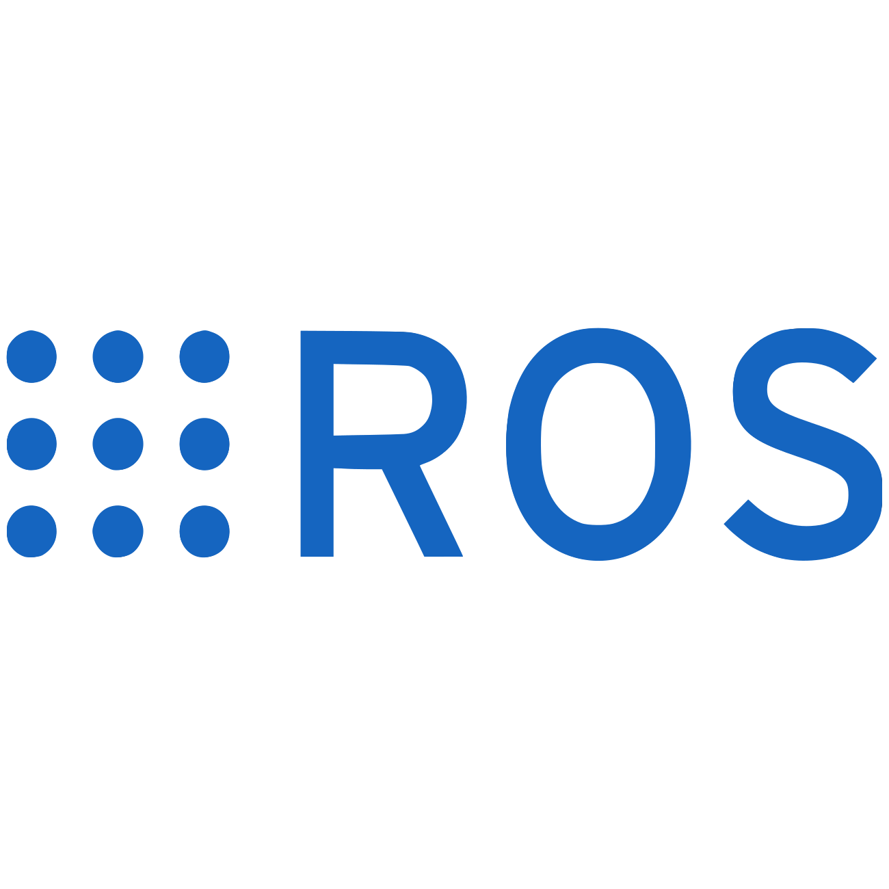

Profile


| 氏名-Name- | 端井大貴 (Hanai Hiroki) |
|---|---|
| 年齢-Age- | 22歳 |
| 所属-Belongs- | 大阪大学 基礎工学研究科 システム創成専攻 システム科学領域 原田研究室 |
| 学年-Grade- | 博士前期課程(修士) 1年 |
| 出身-Hometown- | 石川県 |
Skills

|
 |

|

|
|  |
Hobby
| スノーボード | 毎年7，8回行くくらいスノーボードにはまっています． ゲレンデはスキージャム勝山と高鷲スノーパークがお気に入りです． 最近はハーフパイプとジャンプ台を練習中です． |
|---|---|
| 筋トレ | 毎日，音楽を聴きながらアブローラとプッシュアップバーを使って筋トレをしています． COVID-19が落ち着いたらジムに通いたいと思っています． |
| ランニング | 週1，2で5～10kmほどランニングをしています． |
| バドミントン | 高校の時はバドミントン部，大学の時はバドミントンサークルに所属していました． たまに千里体育館でバイト先の人などと練習しています． |
| ソフトテニス | 中学の時にソフトテニス部のキャプテンを務めていました． ソフトテニスでは主に後衛でした． |
| ドライブ/旅行 | 大学1年の夏に地元で免許を取ってからドライブが好きになりました。 最近行った所だと淡路島や小豆島，沖縄，奈良の鍾乳洞，若草山がとても良かったです． |
| 音楽鑑賞 | King Gnu，星野源，SEKAI NO OWARI，back number，米津玄師，Official髭dism，あいみょん...いろいろ聴きます． 最近は行けていないですが，COVID-19が落ち着いたらまたみんなでカラオケに行きたいです． |
| 読書 | おうち時間が増えたこともあり，これまであまり取り組んでこなかった読書にはまりました． 最近はビジネス本や自己啓発本を読むことが多いです． 直近だと『スマホ脳』，『夢をかなえるゾウ』，『チーズはどこへ消えた』，『人は話し方が9割』を読みました． |